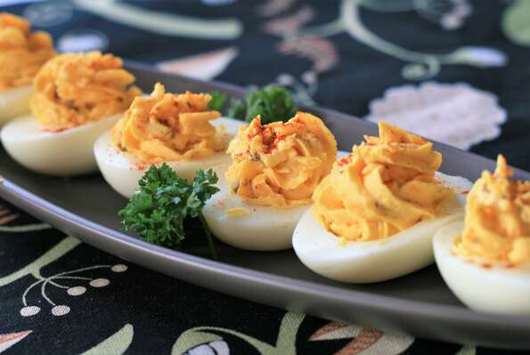

Deviled Eggs

Description
Simple and low effort, these little golden nuggets will satisfy everyone's
appetizing needs. Serves 6.
Ingredients
- 3 eggs
- 1/4 teaspoon vegetable oil
- 1/4 small onion, chopped
- 1 tablespoon sour cream
- 1/2 tablespoon mayonnaise
- 3/4 teaspoon ranch dressing
- 3/8 teaspoon Dijon mustard
- 1/8 teaspoon garlic powder
- Onion powder
- Lemon pepper seasoning
- 3/4 teaspoon bacon bits
- 1/4 cup finely shredded sharp Cheddar cheese
- 5/8 teaspoon paprika
Steps
- Place eggs into a large pot and cover with lightly salted water.
Bring to a boil and reduce heat to medium; boil eggs for 10 to 12 minutes.
Drain the boiling water and fill pot with cold water. After 2 to 3 minutes,
pour off water and replace with more cold water. Repeat until eggs are fully
chilled, 10 to 15 minutes. Peel eggs.
- Heat vegetable oil in a small skillet over medium heat and cook and stir
onion until translucent, about 5 minutes. Remove from heat and let cool.
- Slice eggs in half lengthwise and scoop yolks into a bowl; transfer egg
white halves to a plate. Mash egg yolks with a fork; stir in sour cream,
mayonnaise, ranch dressing, Dijon mustard, garlic powder, onion powder,
and lemon pepper seasoning until yolk mixture is smooth. Stir in sauteed
onions, bacon bits and Cheddar cheese.
- Generously fill egg halves with filling and sprinkle each deviled egg
with paprika. Refrigerate until chilled before serving.